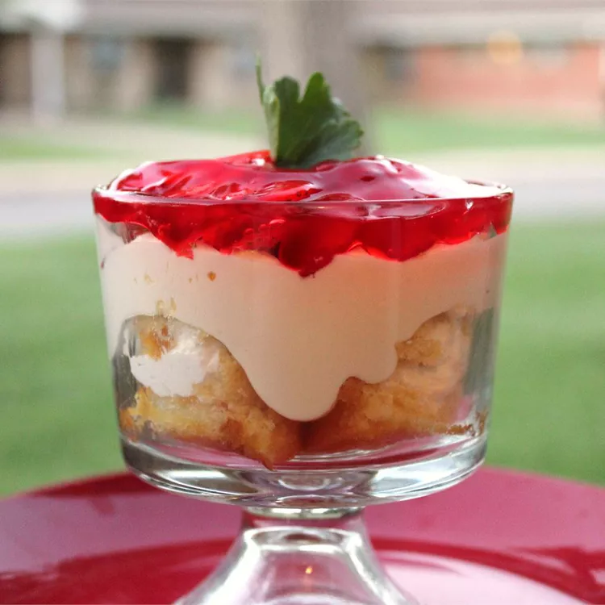

Strawberry Twinkie Recipe

Description
This recipe makes a delicious make-ahead dessert using Twinkies, cream cheese, whipped dessert topping, and strawberries.
Ingredients
- 4 cups sliced fresh strawberries
- 1 (18 3/4 ounce) can ready-to-use strawberry glaze
- 8 Twinkies
- 1 (8 ounce) package cream cheese, softened
- 1 (14 ounce) can sweetened condensed milk
- 1 (12 ounce) container frozen whipped topping, thawed
Steps
- Combine strawberries and glaze in a small bowl.
- Slice Twinkies in half lengthwise, and place in a single layer over the bottom of a 9x13-inch dish.
- In a mixing bowl, beat cream cheese and condensed milk until smooth. Fold in whipped topping and spread mixture over Twinkies. Spoon berries over cream cheese mixture. Cover and chill 30 minutes or more. Refrigerate leftovers.
- Enjoy!!